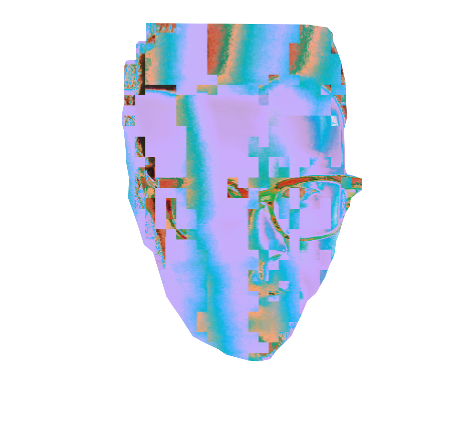

Kai-Luen Liang is an interdisciplinary artist working with code, sound, video, and digital poetics. His work explores entangled themes of memory, erasure, migration, and machine perception, often using generative processes, DIY software, and malfunctioning systems to produce time-based, unstable experiences. Informed by diasporic histories and glitch aesthetics, he interrogates systems of surveillance, algorithmic divination, and the fragmentation of identity in digital space.
He builds hybrid instruments and designs custom software that intentionally embraces breakdown and miscommunication. His projects seek alternatives to dominant narratives of utility and optimization, revealing the poetic and affective potential of failure. At the core of his practice is a belief in the power of uselessness—software and algorithms not built for productivity, but for reflection, resistance, and alternative ways of being.
His work spans sound design for interactive installations and film, as well as solo and collaborative projects incorporating microsound, ASMR, and hallucinations from neural networks. His recent works often center around the sonic byproducts of machine learning failure, drawing connections between intimacy, fragility, and digital perception.
He has performed and exhibited internationally, including at ARS Electronica (Linz), SXSW (Austin), XCOAX Conference for Computation, Communication, Aesthetics & X, Boiler Room (Beijing), Clockenflap Music Festival (Hong Kong), Shanghai International Jazz Festival, JACC, and 751 Design Week (Beijing). His music has been released by SVBKVLT (Shanghai), Ran Music (Beijing), Modern Sky, and Robox Neotech (Berlin).
He holds a BA in Asian American Studies from the University of California, Santa Barbara, and an MFA in Music Technology: Intelligence, Interaction, and Design from the California Institute of the Arts.
He currently serves as faculty at the Center for Integrated Media at CalArts and as a visiting artist at Occidental College, where he teaches courses in interactive media, machine learning, creative coding, and multichannel sound installation.